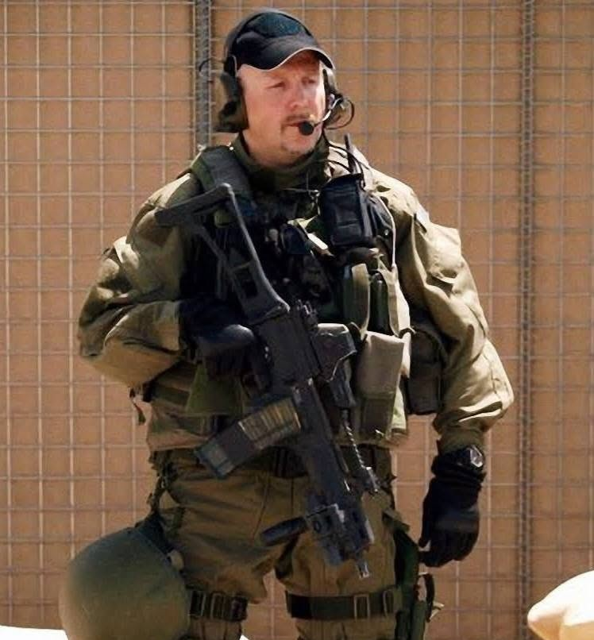
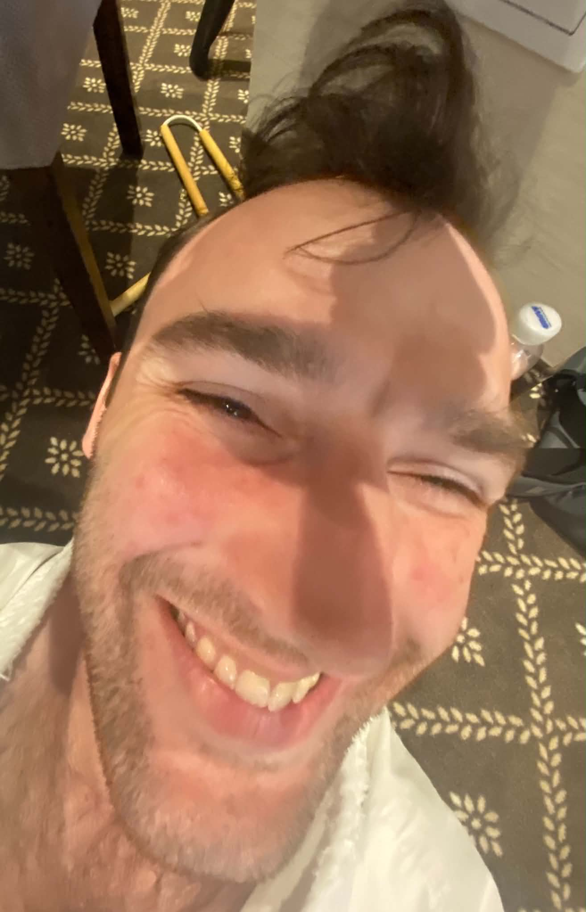

Instruktorzy
Akademią kieruje trener z ponad trzydziestopięcioletnim doświadczeniem i realnym dorobkiem mistrzowskim swoich zawodników.

Mirosław Plata
Jeden z najbardziej doświadczonych i cenionych trenerów sztuk walki w Polsce. Pułkownik służb specjalnych Wojska Polskiego. Autorytet w dziedzinie bezpieczeństwa i systemów bojowych – w przeszłości pełnił prestiżową funkcję Szefa Szkolenia Biura Ochrony Rządu (BOR). Jest twórcą autorskiego, niezwykle skutecznego systemu samoobrony JSDF. Mirosław Plata stworzył również własny, niezwykle szanowany w środowisku i ekstremalnie trudny styl kobudo nunchaku, który stanowi dziś tajną broń naszej Akademii. Jego ogromna wiedza praktyczna, wieloletnie doświadczenie trenerskie oraz unikalne podejście do dydaktyki gwarantują najwyższy, niespotykany nigdzie indziej poziom szkolenia.
Beata Medzwiecka-Plata
Filar organizacyjny i serce naszej Akademii. Funkcję dyrektora pełni niezmiennie od momentu założenia placówki, dbając o jej dynamiczny rozwój oraz najwyższe standardy obsługi. Jako niezwykle doświadczona pedagog, czuwa nad aspektem wychowawczym prowadzonych zajęć. Jej wiedza pozwala na stworzenie w Akademii bezpiecznego, przyjaznego i motywującego środowiska, idealnego do wszechstronnego rozwoju dzieci, młodzieży i dorosłych.
Gracjan Plata
Instruktor z wieloletnim stażem na macie, doskonale rozumiejący specyfikę pracy z najmłodszymi. W Akademii odpowiada przede wszystkim za prowadzenie zajęć dla młodszych grup wiekowych. Dzięki świetnemu podejściu pedagogicznemu i cierpliwości, potrafi przekształcić wymagający trening karate we wspaniałą przygodę. Skutecznie szczepi w uczniach pasję do sportu, dyscyplinę oraz zasady fair play od najmłodszych lat.
Klaudia Ćwiek
Wielokrotnie utytułowana zawodniczka na arenie międzynarodowej oraz instruktorka z wieloletnim stażem. Swoją pozycję w świecie sztuk walki przypieczętowała zdobyciem wielokrotnego tytułu Mistrzyni Świata Karate w 2026 roku. Na matach Akademii Klaudia łączy precyzję Karate KWF z wszechstronnością Ju-Jitsu. Jej treningi to idealne połączenie mistrzowskiej techniki, pasji oraz ogromnej dawki motywacji do przekraczania własnych granic.

Patryk Kępka
Wszechstronny instruktor, który doskonale łączy światy Karate i Ju-Jitsu. Potwierdzeniem jego najwyższej formy i umiejętności jest tytuł Mistrza Świata Karate wywalczony w 2026 roku. Patryk słynie z doskonałego przygotowania merytorycznego do zajęć. Na treningach kładzie nacisk na wszechstronny rozwój sprawnościowy, precyzję ruchu oraz taktykę walki.
Maciej Majewski
Niezwykle ambitny i utalentowany instruktor, który w 2026 roku sięgnął po najwyższe sportowe trofeum, zostając Mistrzem Świata Karate. Maciej na co dzień przekazuje swoje bogate doświadczenie zawodnicze uczniom Akademii. Jego zajęcia charakteryzują się dużą dynamiką i naciskiem na praktyczne zastosowanie technik. Inspiruje podopiecznych udowadniając, że ciężka praca i determinacja prowadzą na sam szczyt.
Michał Szczepański
Zaangażowany instruktor, który z pasją wprowadza uczniów w świat Karate KWF. Posiadacz stopnia 2 Kyu, dbający o każdy detale techniczny wykonywanych ćwiczeń. Michał kładzie ogromny nacisk na solidne fundamenty stylu, prawidłową postawę oraz wszechstronny rozwój fizyczny. Jego cierpliwość i jasny sposób przekazywania wiedzy sprawiają, że treningi pod jego okiem są niezwykle efektywne.